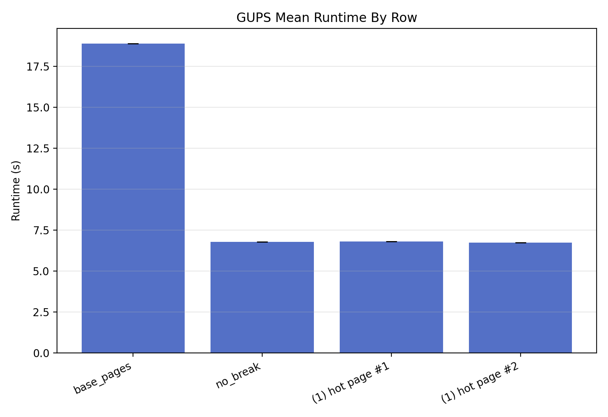
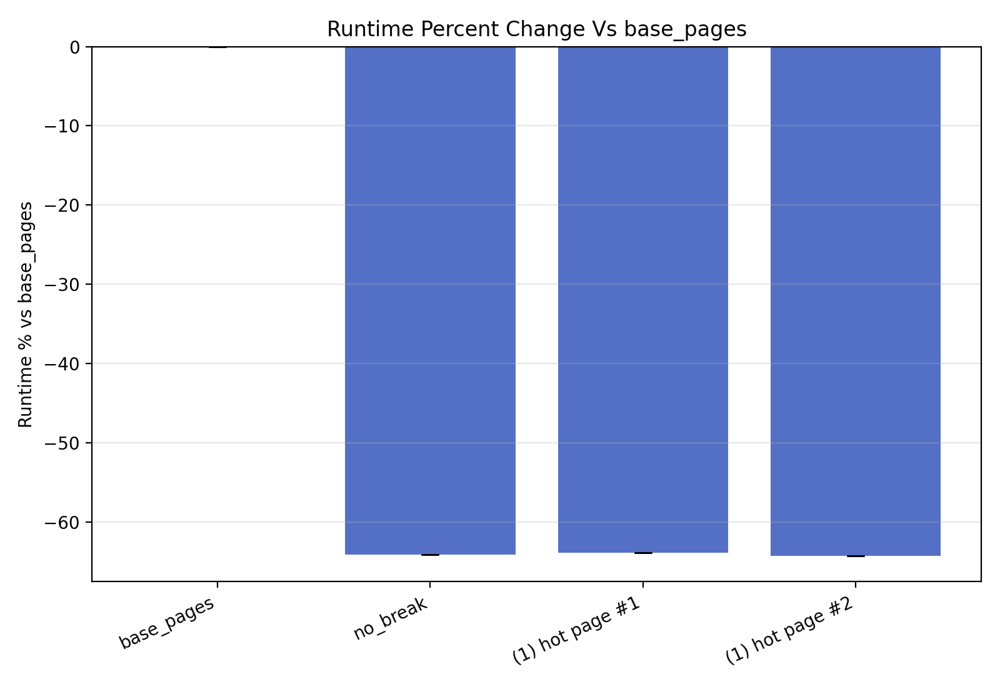
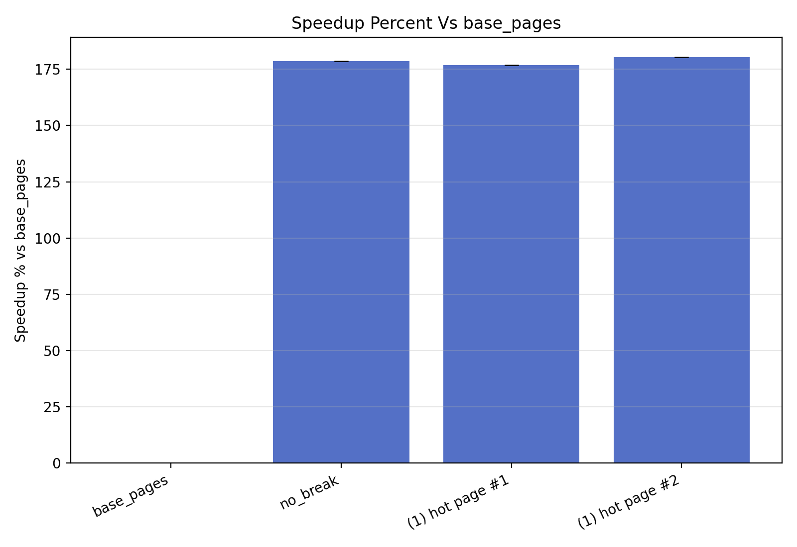
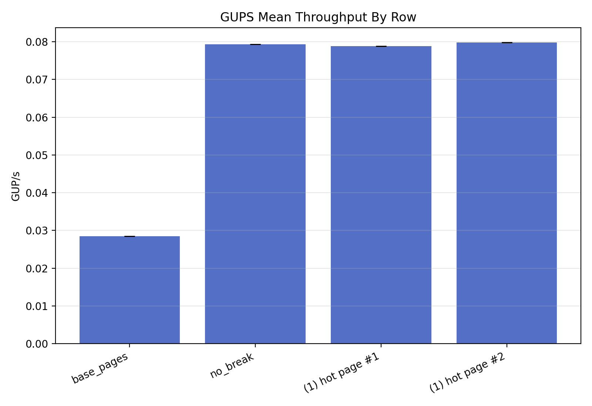

GUPS Split Harness: quick_1gib_4rows_20260428T183301Z
Inputs
- Results parquet: /users/SahilSC/HugePageResearch-gups-harness/temp_data_analysis/gups_quick_1gib_4rows_20260428T183301Z/raw/gups_split_results.parquet
- Breakpoints parquet: /users/SahilSC/HugePageResearch-gups-harness/temp_data_analysis/gups_quick_1gib_4rows_20260428T183301Z/raw/breakpoints.parquet
- Commands log: /users/SahilSC/HugePageResearch-gups-harness/temp_data_analysis/gups_quick_1gib_4rows_20260428T183301Z/raw/gups_split_artifacts/run_commands.log
- Artifacts dir: /users/SahilSC/HugePageResearch-gups-harness/temp_data_analysis/gups_quick_1gib_4rows_20260428T183301Z/raw/gups_split_artifacts
Row Meanings
base_pages means THP never with no page breaks.no_break means THP always with no page breaks.- Split-only rows mean THP always with selected page breaks.
- The normalization baseline is always
base_pages.
- Runtime percent formula:
100 * ((runtime_s_i / base_pages_runtime_s_i) - 1)
- Speedup percent formula:
100 * ((base_pages_runtime_s_i / runtime_s_i) - 1)
Main Graphs




Broken Page Count Curves
No successful multi-page split rows found.
Row Summary
| Row | Runtime | Runtime % vs base_pages | Speedup % vs base_pages | GUP/s | dTLB loads | dTLB misses | Split successes | Expected successes | Max split attempts |
|---|
| base_pages | 18.866449 +/- 0.000000 | 0.000 +/- 0.000 | 0.000 +/- 0.000 | 0.028456 +/- 0.000000 | | | 0 | 0 | 0 |
| no_break | 6.772392 +/- 0.000000 | -64.104 +/- 0.000 | 178.579 +/- 0.000 | 0.079273 +/- 0.000000 | | | 0 | 0 | 0 |
| (1) hot page #1 | 6.812942 +/- 0.000000 | -63.889 +/- 0.000 | 176.921 +/- 0.000 | 0.078802 +/- 0.000000 | | | 1 | 0 | 1 |
| (1) hot page #2 | 6.731181 +/- 0.000000 | -64.322 +/- 0.000 | 180.284 +/- 0.000 | 0.079759 +/- 0.000000 | | | 1 | 0 | 1 |
Omitted Split-Only Rows